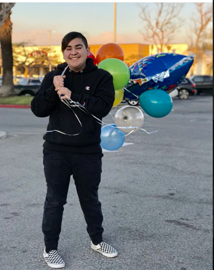

Geo is 16 years old. He has one older sibling, his brother. Geo's favorite Disney princess is Mulan. Geo has never seen a High School Musial movie until this year (which is pretty tragic). I would say Geo is pretty invested in drama. He always seems to find out the tea! Geo is a serious dog person. He hates cats. He thinks they are mean and vicious. Geo likes to listen to some teenybopy music. Some of his favorite artists include Alessia Cara and Troye Sivan. Geo enjoys spending his time with friends. He is usually out every weekend. In general he is a very social person. He likes to speak out a lot, in and out of a classroom. One last thing you should know about Geo is that he is Hailey's cousin. The two are related by marriage. He has gone out of his way to prove this and has gotten upset with Hailey multiple times when Hailey didn't approve. GEO WANTED TO BE HAILEY'S COUSIN AT ONE POINT IN TIME!
